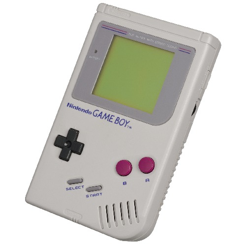

O Playstation 1 está no mercado há 29 anos.
Produziu títulos importantes como Silent Hill, Gta's, Tony Hawk's e muitos outros.
E começaram a abrir espaço para entradas de CD, onde antes eram cartuchos.
Após o lançamento do Playstation 3 e resultados postivos de vendas , a Sony continuou a boa fase e lançou o Playstation 4.
Sendo mais um sucesso e elogios do publico. Um dos principais fatores para o estouro do PS4 foram os seus jogos exclusivos.
Um dos classicos da Nintendo e foi um dos primeiros portáteis.
E seus lançamentos de jogos fortaleceram ainda mais sua marca. como : Super Mario Land, Tetris, The Legends os Zelda: Link’s Awakening e Pokémon Yellow.

Foi o console portátil mais vendido da história.
E se destacou por possuir duas telas e ainda o uso de canetinha.
Também inovou nos títulos da empresa japonesa e criaram jogos como “Mario Kart DS”, “New Super Mario Bros.” e “Pokémon Diamond & Pearl” .
1º - Playstation 2 (2000) – 155,1 milhões
Foi responsável por apresentar o mundo dos videogames para diversos futuros jogadores no Brasil e no mundo, além de marcar seu nome na história com vários jogos icônicos, como “Grand Theft Auto: San Andreas”, “Resident Evil 4”, “Guitar Hero” e “God of War”.
O console da Sony embarcou no sucesso do PlayStation 1 e com isso, é o console mais vendido da história até o momento.